진료센터
시력교정술로 실명할 수 있다?
avellino corneal dystrophy avellino corneal dystrophy avellino corneal dystrophy
아벨리노 각막이상증이란?
이 유전성 각막 질환에서는
각막에
각막에 단백질이 쌓여
시력이 낮아지거나 각막이 흐려지는 변화를
일으킬 수 있습니다.
질환이 시작된 뒤 대부분의 증상은 천천히
진행되나,
각막에 손상이나 자극이 생기면
단백질이 더 빠르게 쌓일 수 있고
시력저하는 물론 실명할 수 있습니다.
각막이상증의
발생 원인과 주요 증상
-
발생 원인
특정 유전자의 다양한 돌연변이
특정 유전자 (TGFBI) 의 다양한 돌연변이로
아밀로이드 축적물로 형성된
비정상적인 과다 단백질을
만들어 냅니다. 이 흰색 단백질은 각막에 계속 쌓여
시야를 가리고, 결국 시력을 잃을 수도 있습니다.환자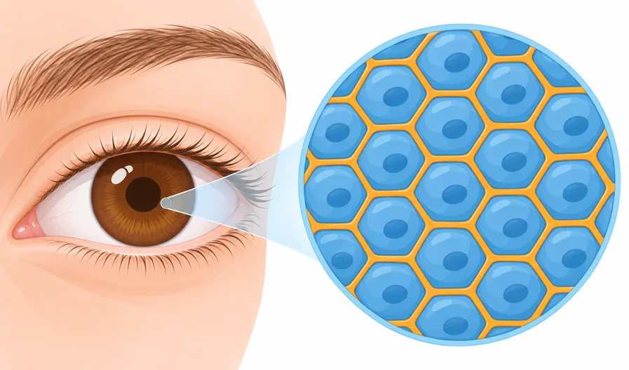
-
일반인에 비해 세포 손상이 많음
카탈라제는 몸속 과산화물을 분해해 세포 손상을
막고 몸속 효소 활동을 돕습니다.
그런데 각막이상증 환자는 이 카탈라제가 상대적으로 적어
적어 세포의
일반인보다 손상이 더 많이 일어납니다.정상인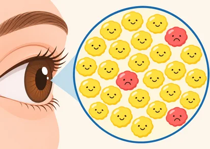
환자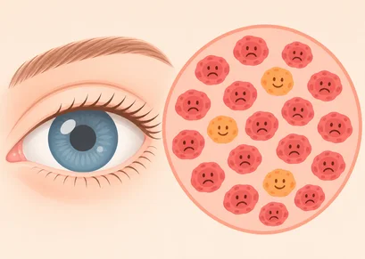
발생 과정
증상
-
개인마다 차이가 있지만
주로 10-20대에
증상이 발현합니다. -
각막에 흰색 반점이
생기며, 나이가 들수록
점의 갯수와 반점의 크기가
커지고 결국 시력이
감소합니다. -
돌연변이 유전자 증상에
따라 약 3세부터 증상
발현이 시작되는
경우도 있습니다.
각막이상증 타입별 시력 손실 형태
Universal Test
더욱 정확하고 체계적이게,
아벨리노 유니버셜테스트
유전자 검사는 한 번의 검사로
주요 각막이상증 5가지를 검사합니다.
-
제1형 과립각막이상증
각막 중앙에 발현되며, 부서진
빵 부스러기와
유사한 형태로 발생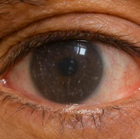
-
아벨리노 각막이상증
(제2형 과립각막이상증)870명 당 1명에서 발병하며,
각막이상증 가운데 가장 흔한 형태로, 각막 가운데에 흰 침착물이 생김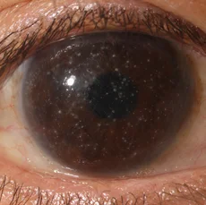
-
제1격자형 각막이상증
8각막이상증의 14%를 차지하며,
각막에 나뭇가지처럼 뻗는 선 모양 침착물이 생김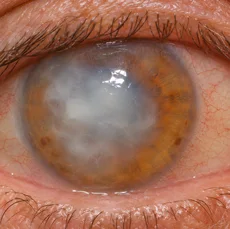
-
레이스버클러스 각막이상증
각막 여러층에 비정형성 침착물이
구름처럼 퍼지는 모양으로 발생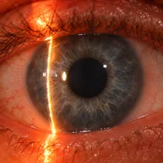
-
티엘벵케 각막이상증
각막 가장 바깥층 가운데에서 나타나며,
벌집모양의 형태로 발생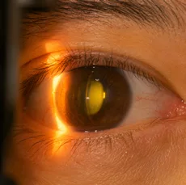
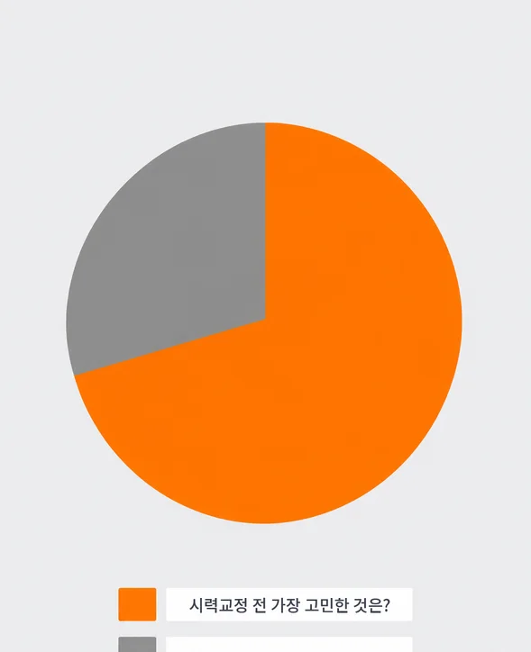
왜 유니버셜테스트를 해야 할까?
시력교정 수술을 받은 환자 설문 조사 결과
그래프처럼 가장 큰 비율은 '수술 뒤 부작용',
환자의 불안감 해소에도 큰 도움을 줍니다.
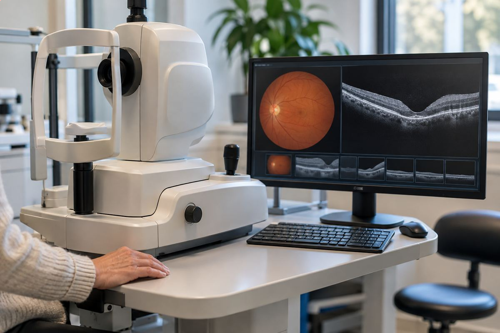
-
정확한 판정 및 진단 불가
질환이 생겨도 어떤 각막이상증인지 정확하게 진단할 수 없습니다.
ex) 증상은 있지만 모양만으로는 어떤 형인지 구분할 수 없음
- 세극등 현미경으로는 각막이상증으로 보였지만
하셨지만, 아닌 경우 발생예를 들어 보호자의 현미경 검사에서 유전성 각막 이상이 확인되어도 자녀에게는 당장 같은 소견이 보이지 않을 수 있습니다.
-
수술 후에도 같은 위험성
각막이상증이 있으면 시력교정술 뒤 시력이 떨어집니다.
ex) 증상은 있지만 모양만으로는 어떤 형인지 구분할 수 없음
- 해외 사례: 각막이상증 환자가 수술 뒤 증상이 생김
-
확인이 어려운 무증상의 경우
DNA 검사의 필요성
각막이상증 유전자가 있어도 30~50대까지
증상이 전혀 나타나지 않는 사례가
보고되고 있고,
증상 초기에는 정상인의 각막과 유사해
안과적 검사만으로는
질환인지 정확히 알기 어렵습니다
따라서 시력교정 수술을 계획하기 전에
미리 각막이상증 유전자 검사를 받는 것이 중요합니다.
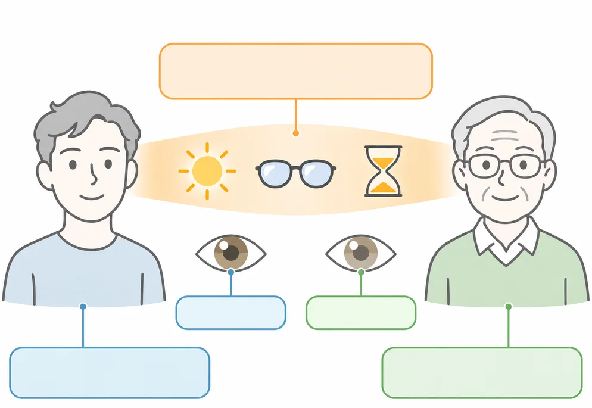
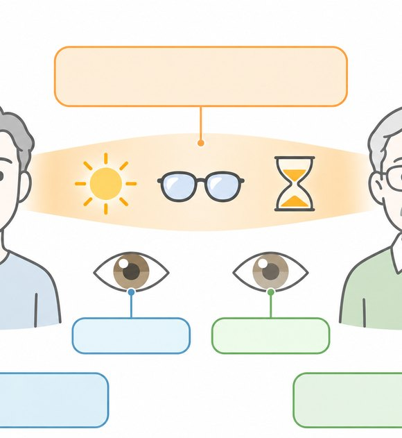
유전자 검사 진행 방법
genetic test process
유전자 검사 진행 방법
-
1
1: 1 상담 후 동의서와
의뢰서 작성 -
2
샘플 (구강상피세포)
채취 -
3
유전자 검사
-
4
90분 이내
검사 결과 확인
각막이상증의
치료방법과 수술 TREATMENT
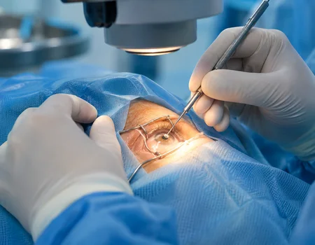
약물과 수술로 잠시 증상을 줄일 수는 있지만,
아직 각막이영양증을 완치하는 방법은 없습니다.
흐려진 각막층 일부를 깎아 내는 각막절제술이나
각막이식으로 투명도를 되찾을 수는 있지만 수술 뒤에도
단백질이 계속 쌓여 재발하고
각막이 다시 흐려지는 경우가 많습니다. 그래서 정기적인
'안' 검진과
시력교정술 전에는 유전자 검사로
각막이상증인지 정확하게 진단하는 것이 중요합니다.
돌연변이 유전자가 있다면 라식 · 라섹 같은
시력교정술은 받을 수 없습니다.
또한 눈을 비비거나 각막
각막에 손상을 주는 일을 최대한 피하고, 눈을 자극하는
자외선도 피해야 합니다.
아벨리노 각막이상증,
근치적 치료가 가능하지만
대부분 재발합니다.
각막을 깎아 잠시 시력을 얻을 수는 있지만
곧 재발해 더 나빠집니다.
또한, 각막 두께에
따라 시도 가능 횟수가 제한적입니다.
따라서 최대한
질환이 시작되는 것과 진행을 늦추는 것이 가장 중요합니다.
각막이식
CORNEAL TRANSPLANTATION
레이저 각막 절제술
PHOTOTHERAPEUTIC KERATECTOMY
- 12개월 후
-
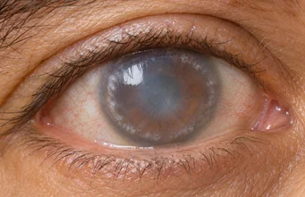
18개월 후 -
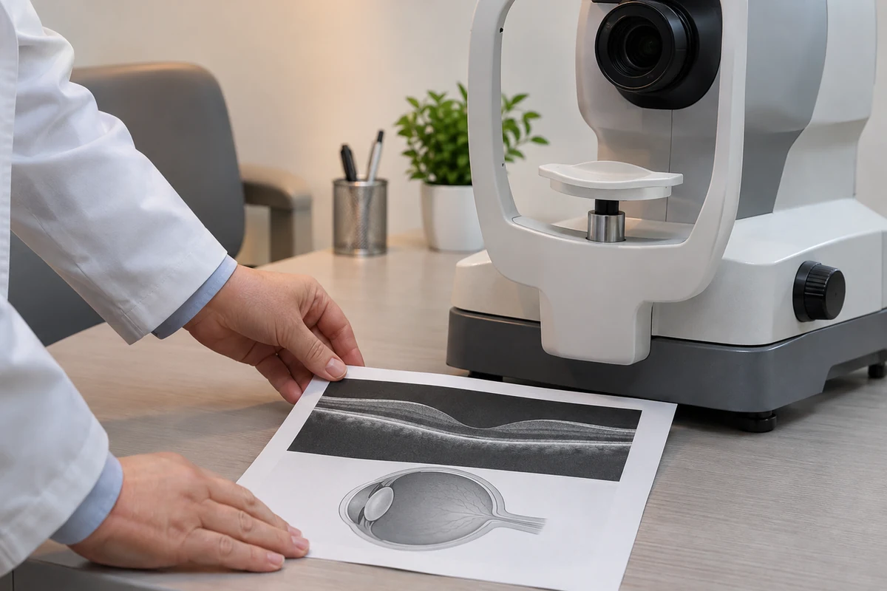
3년 후 - 20년 후
검사장비
세극등 현미경 검사
세극등 현미경 검사는
안과 검사의 가장 기본이 되는 검사입니다.
각막 및 전안부 이상을
검사할 수 있습니다.
고배율의 현미경이
달려있는 현미경으로 배율을 확대해
눈을 검사합니다.
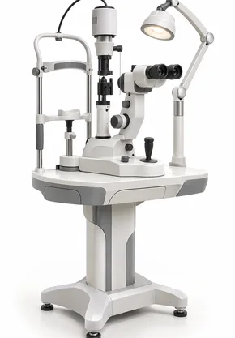
slitlamp
아벨리노랩 유니버셜테스트
한 번의 유전자 검사로 주요 각막이상증
5가지를 검사합니다. 꼼꼼한 사전 검사로
시력 소실을
유발하는 부작용을 예방합니다.
Test